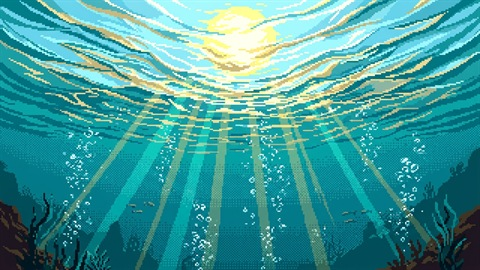
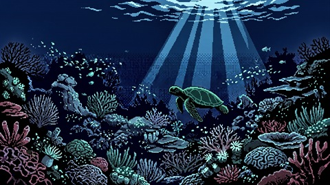
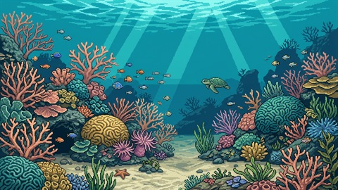

Escolha seu tempo.
Uma leitura, um trabalho, uma ideia. Você escolhe a duração, inclusive sem cronômetro.

SEU PRIMEIRO MERGULHO COMEÇA AQUI.
Reserve um tempo para o que importa.
Estude, trabalhe ou crie — e veja um pequeno mundo marinho ganhar vida com o seu foco.
Foco, biomas e descobertas. Tudo isso é grátis.
UM PEQUENO MUNDO. TODO SEU.

SEU PEQUENO MUNDO
Onde a cor aprende a voltar.
Vida no recife 32%
Um minuto de cada vez.
RECIFE DE CORAL
Agora, só você e o que importa.
Explore a proposta. Os dados desta prévia são ilustrativos.
01 / UM TEMPO SEU
Escolha uma tarefa. Dê a ela um pouco do seu tempo. Cada sessão concluída ajuda a restaurar seu mundo marinho virtual.
Uma leitura, um trabalho, uma ideia. Você escolhe a duração, inclusive sem cronômetro.
A luz desacelera. O oceano acompanha. Sua atenção fica com o que importa.
O recife recupera as cores. Novas criaturas aparecem. Seu tempo deixa uma marca.

DEMONSTRAÇÃO ACELERADA · 15 SEGUNDOSAqui, 15 segundos contam uma história. No aplicativo, o progresso vem das suas sessões de foco.
02 / SIGA A CURIOSIDADE
Seis biomas. Seis maneiras de sentir o oceano. Explore a luz, as cores e a vida de cada região.
01 / 06
Onde a cor aprende a voltar.
UMA DESCOBERTA DESTE MUNDO
Volta primeiro. Sempre. Como se o recife precisasse de uma cor corajosa para lembrar as outras.
Todos os biomas fazem parte da experiência gratuita. Novas regiões se abrem conforme seu progresso.
PARA O QUE IMPORTA AGORA
EstudarReserve um bloco para a próxima leitura.
TrabalharDê espaço à tarefa que pede sua atenção.
CriarPermaneça com a ideia que quer desenvolver.
SEU PRÓXIMO MERGULHO
Sessões de foco, progressão nos seis biomas e descobertas de espécies fazem parte do Mergulhe grátis.
Os links de instalação aparecerão aqui quando cada versão estiver disponível nas lojas.
Faça seu primeiro mergulhoUm aplicativo de foco com um mundo marinho virtual. Você escolhe uma duração, concentra-se na sua tarefa e acompanha o oceano ganhar vida conforme conclui sessões.
As sessões de foco, a progressão pelos seis biomas e todas as descobertas de espécies. O Mergulhe Plus é uma proposta de extras opcionais e sua compra ainda não está disponível.
Esta página apresenta o produto e uma proposta interativa do novo design. A transformação de 15 segundos é uma demonstração acelerada. O tempo e o progresso exibidos são ilustrativos; a página não salva sessões nem altera seu oceano no aplicativo.
O aplicativo oferece foco local sem cadastro. A conta é opcional para os recursos que precisam de identificação. Você não precisa entrar em uma conta para explorar esta apresentação.
As sessões concluídas concedem progresso no mundo virtual. Você começa no Recife de Coral e avança para outras regiões conforme restaura os biomas. A simulação representa um oceano do jogo.
As versões para Chrome, Android e iPhone estão em preparação para publicação. Esta página será atualizada com os links oficiais conforme cada versão estiver disponível.